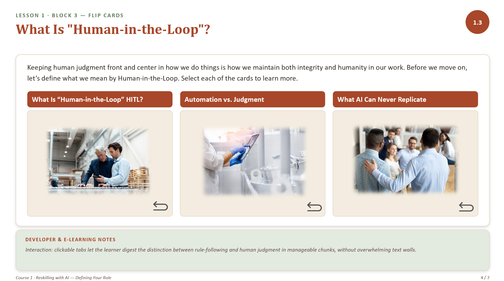
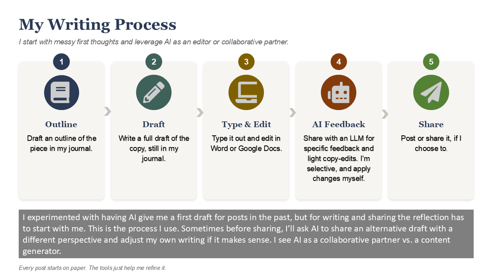
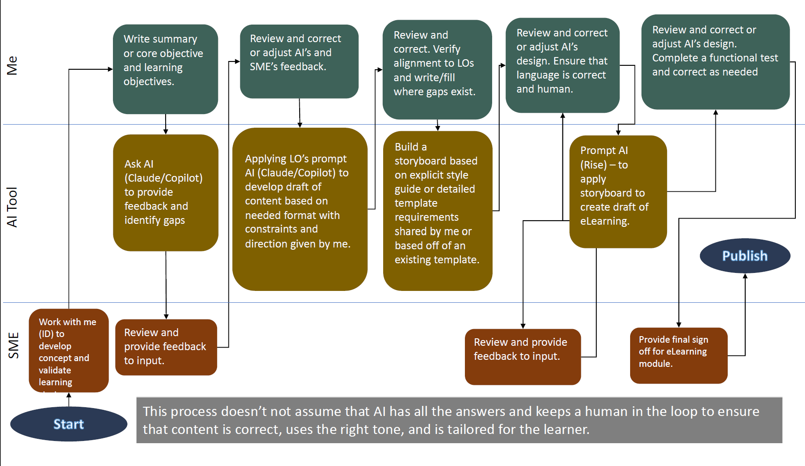

My Work Process
August 10, 2026
Before discussing AI, it's helpful to understand the design process that guides all of my work. While tools change rapidly, my approach remains rooted in performance analysis, stakeholder collaboration, learner-centered design, and continuous evaluation. This blueprint illustrates the core process I use to move from business need to measurable learning outcomes. I've also included a longer handout that includes a fuller description of what happens in each step as well as the technological tools an ID or Learning Experience Designer has available to them. I have to admit I really did enjoy building out this blueprint because it caused me to think of many of the projects where I applied this process or something similar to it in the past.
AI supports many of these activities, but it never replaces the critical thinking, stakeholder alignment, and performance consulting that effective instructional design requires. It's really important for the Instructional Designer to maintain their human-in-the-loop presence and influence at all levels of design.
`
Addressing an Elephant in the Room When it Comes to AI
August 5, 2026
It might be me, but I noticed that me and many of my peers struggle with articulating our value effectively. Whether this is due to a cultural feature at work, or how we’re raised not to brag, it still seems to haunt many of us.
When we talk about AI in the workplace, the conversation usually jumps straight to tools, prompts, and productivity hacks. But in building an AI reskilling framework, I realized something fundamental was missing: psychological safety. Before asking teams to adopt AI, we have to address the not-so-silent anxiety around role disruption and replacement.
I’ve been working on a two-part learning experience ("Reskilling with AI: Defining Your Role") designed to shift the conversation away from fear and toward human value. This blended (asynchronous/live or webinar) training is actually part of a 4 part series that aims at helping teams transition to successful and thoughtful use of AI.:
- Self-Paced eLearning: Learners strip away daily "operational noise" (admin work, data copying, slide formatting) to identify their core impact and map their work into three clear buckets: Predictable, Context-Dependent, and High-Stakes.
- Manager-Led Discussion & TtT Guide: Leaders facilitate a 45- minute team workshop focused on psychological safety, helping employees name their unique "Onlyness", or the institutional memory, relationships, and context no software can replicate.
A few things I learned (and struggled with) during the design process:
- Self-advocacy can be hard: Asking employees "What is your unique value?" can trigger anxiety, especially in cultures where self-promotion isn't natural. I redesigned our prompts around storytelling asking instead, "What breaks if you go on vacation?" or using peer-validation exercises.
- Habits over mandates: Instead of asking for massive workload overhauls, we anchored the commitment phase in David Rock's habit-building research, guiding learners to create a 60-second "Tomorrow Trigger" micro-habit.
To be completely transparent. I asked AI to provide suggestions on how to address the problem of addressing cultural issues with self-advocacy in the workplace. I had a conversation with Gemini about the importance of building habits to actually change behavior. This training: It’s still a start, and I’d like to continue exploring how to build this learning going forward.
Link - Overall Learning Series Strategy - Reskilling the Workforce for AI adoption
Link - Course 1 Storyboard - Part 1: Re-Imagining Your Role eLearning
Link - Course 1 Faciliator Guide - Part B - Re-Imagining Your Role Live Session

How I Work with AI
July 26, 2026
My writing process usually starts with jotting down quick notes, an outline or an idea for a prompt in my paper journal. Once I feel like I have the idea or direcation somewhat gelled. Or I have paragraphs written I will post it to the LLM of my choice, and add a prompt asking for feedback or directing it to create a draft or first shot at a design or image. The process in the illustration below sums up how I write using AI as a collaborative partner.

I currently use the following process to work with AI to create learning content. I partner with SME to establish the concept and validate the learning design strategy, and include this SME as a reviewer to validate content throughout the process. I also review the information/content to ensure that it aligns to the learning objectives as well as makign sure the language and tone is human and authentic. Through this whole process, we're not assuming that the AI is the final authority.

Putting AI Adoption into Perspective Using an ADKAR Friction Map
July 5, 2026
We're living in unprecedented times. We've been given access to tools that could potentially provide us with efficiency and depth in the form of AI LLMs. Data and content can be efficiently organized and we can quickly brainstorm and imagine ways to help customize learning and mastery of content and skills, but despite being gifted with these new capacities, we can't forget our role as the "Human-in-the-loop."
Change Management's ADKAR model and Friction Mapping can help us look at the resistance to change from a birds eye view.
Let's consider what causes general resistance to AI. You may hear:
- It takes too much energy and threatens the environment.
- It will replace humans at work, taking jobs from many.
- It will make us overly dependent on it instead of engaging our thinking. It will basically become our butler.
- It will take away our will to create and our motivation to work.
A friction map provides a way to list out key resistance points to a change, but also identify ways to reduce this resistance, alleviate audience fears as well as accustomize them to the change. The twist here is you can apply Prosci Change Management's ADKAR to the map to help build a clearer path to adoption.
![Infographic titled The Friction Map: ADKAR and the Emotional Physics of Change. It shows a Logical Engine mapping the ADKAR sequence of Awareness, Desire, Knowledge, Ability, and Reinforcement alongside an Empathetic Engine mapping emotional blocks and values. A bridge diagram tracks friction at each stage: Awareness and Desire form the Resistance Zone, where awareness requires credibility and desire is the hardest stage because it involves personal choice. Knowledge and Ability form the Capability Gap, where knowledge covers the how but ability is blocked by habit and psychological barriers. Reinforcement is labeled the Gravity of the Old Way, needing to counter the pull to revert to familiar habits.](images/Friction Mapping ADKAR.png)
Visual Note: The featured graphics in this article were developed using [Notebook LM, Canva] as part of a human-in-the-loop creative workflow, ensuring custom visual alignment with the instructional concepts discussed.
Image description: the map plots five ADKAR stages as stepping stones across a bridge. Awareness carries the primary friction of questioning credibility or "why now." Desire carries the friction of misaligned incentives and threats to autonomy. Knowledge and Ability form the capability gap between knowing and doing. Reinforcement has to counter the natural pull back to old habits.
So let's create a friction map that utilizes the ADKAR model to help us build a plan for introducing and sustaining adoption of AI that addresses common concerns.
AI Friction Map: Leveraging ADKAR & Emotional Physics
| ADKAR Journey Stage |
Primary Friction (Restraining Force) |
The Resistance Point (Voice of the User) |
Empathetic Mitigation Action (The 11th Idea) |
AWARENESS
(The Credibility Milestone) |
Questioning the "Why Now?"
Skepticism of executive mandates or tech-trend chasing. |
"We haven't been given a clear explanation for why this change is necessary right now." |
Establish Strategic Credibility: transparently share the business data, inefficiencies, or industry shifts driving the change. Address data privacy and intellectual property guardrails upfront to build safe structural boundaries. |
DESIRE
(The Resistance Zone) |
Threats to Autonomy
Fear of obsolescence, replacement, or devaluation of craft. |
"This is a stepping stone to job replacement, not collaboration." |
Align Personal Incentives: shift the narrative from automation to augmentation. Co-create "human-in-the-loop" workflows with employees, explicitly showcasing how AI absorbs tedious tasks to protect and elevate their unique human expertise. |
KNOWLEDGE
(The Understanding Bridge) |
Value & Quality Misalignment
Belief that generic tech outputs compromise professional standards. |
"AI compromises our quality, ethics, and professional standards." |
Contextualized Education: move past generic prompt engineering cheat sheets. Provide tailored training focused on critical evaluation, teaching users how to apply their deep domain expertise to fact-check, refine, and steer AI outputs. |
ABILITY
(The Capability Gap) |
The Force of Habit
Psychological barriers and the comfort of old, predictable routines. |
"The technology is unreliable and introduces more work than it saves." |
Lower Activation Energy: build low-stakes sandbox environments. Minimize workflow disruption by starting with tiny, "low-friction" AI entry points (like basic text summaries) where users can safely fail without performance anxiety. |
REINFORCEMENT
(The Gravity of Comfort) |
The "Revert" Reflex
Neurological pull to return to comfortable, familiar manual states. |
"It's faster and safer for me to just do this the old way." |
Track Emotional Physics: stop measuring success solely by training completion. Active monitoring must identify workflow hurdles and systemic fears; counteract them by publicly celebrating micro-wins and establishing peer-led support systems. |
By integrating the linear structure of Prosci Change Management's ADKAR model with the responsive insights of friction mapping, we can transform the daunting task of AI adoption into a manageable, human-centered journey. The dual-engine approach reminds us that sustainable adoption is not about forcing compliance or tracking standard training metrics. Instead, it is about respecting the emotional physics of change, identifying the real, systemic psychological blocks and perceived barriers that cause users to hesitate, and meeting them with targeted, empathetic solutions.
When we lower the activation energy by introducing safe sandboxes, establishing strategic credibility, and aligning personal incentives, we do more than just introduce new software. We build an environment where individuals feel secure enough to shift from friction to curiosity. Using this framework allows organizations to move past generic, automated strategies and focus on the valuable human elements that make collaboration with technology truly meaningful.
Ultimately, successfully adopting AI means ensuring our teams feel empowered rather than replaced. By committing to running an empathetic engine alongside our logical rollouts, we can confidently guide our workplaces toward a productive, balanced future where human expertise remains firmly at the center of innovation. The next step is to show how AI can empower and augment their work vs. replace them as curators, developers and creators.
As I look at upcoming projects and team workflows, I'll ask myself: What is the primary "unvoiced friction" holding your team back from embracing AI right now, and how can you adjust your strategy to address it empathetically?